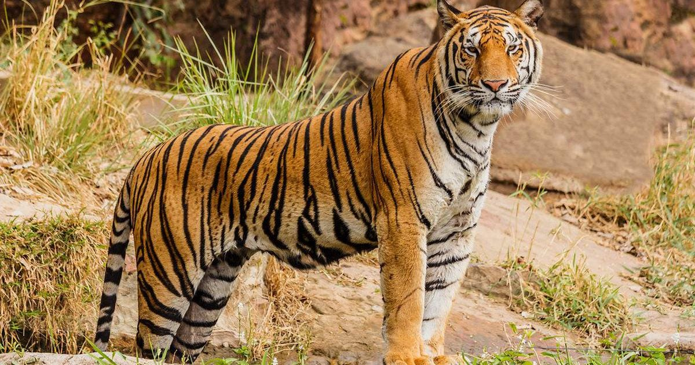

Bengal Tiger: Conservation Profile
The world's most iconic big cat with distinctive orange coat marked by black stripes, powerful muscular build, and intense amber or yellow eyes. Males are significantly larger with prominent ruff around the neck. A symbol of power, strength, and elegance, it is India's National Animal.
Names and Scientific Classification
The Bengal tiger's classification highlights its status as the most numerous and genetically diverse tiger subspecies, representing the "original" tiger.
Scientific Name
Panthera tigris tigris
Common English Names
Bengal Tiger, Royal Bengal Tiger, Indian Tiger
The Tiger's Roar Through Time
Scroll down to explore the Bengal tiger's evolutionary journey, its profound cultural significance, the threats it faces, and the dedicated conservation efforts to protect it.
Their Story - Origin, History & Historical Significance
Evolutionary Journey: The tiger lineage split from other big cats approximately 6-10 million years ago, with modern tigers evolving around 2 million years ago. The Bengal tiger represents the most numerous and genetically diverse tiger subspecies, having adapted perfectly to the diverse ecosystems of the Indian subcontinent - from the mangrove swamps of the Sundarbans to the grasslands of central India and the foothills of the Himalayas. Scientific Discovery and Classification: The tiger holds the distinction of being one of the first big cats to receive scientific classification. In 1758, Carl Linnaeus described the tiger in his groundbreaking work Systema Naturae, giving it the scientific name Felis tigris. His scientific description was based on earlier naturalists' accounts including Conrad Gessner and Ulisse Aldrovandi, though the genus was later changed to Panthera. The Bengal tiger subspecies was formally recognized as Panthera tigris tigris, representing the nominate subspecies - essentially the "original" tiger from which all other subspecies classifications were derived. Cultural and Historical Significance: No animal holds a more prominent place in Indian culture, religion, and national identity than the Bengal tiger. For over 4,000 years, tigers have been woven into the very fabric of Indian civilization. Religious and Mythological Importance: National Animal: India's National Animal since independence, symbolizing power, strength, elegance, and grace. Hindu Tradition: Sacred to Goddess Durga, who rides a tiger into battle against evil. Shiva's Association: Connected to Lord Shiva, who wears tiger skin, representing mastery over animal nature. Buddhist Symbolism: Represents meditation and mindfulness in Buddhist traditions. Jain Philosophy: Exemplifies the power and dignity of wildlife that must be protected. Historical and Cultural Legacy: Ancient Literature: Featured prominently in the Vedas, Puranas, and epic literature. Mughal Art: Central to Mughal paintings, representing royal power and divine authority. British Colonial Period: Symbol of the "wild India" that colonizers sought to conquer. Regional Folklore: Thousands of stories, songs, and legends across Indian cultures. Modern Conservation: Became the symbol of India's environmental awakening. Historical Timeline: Ancient Period: Revered in Indus Valley Civilization artifacts (3000 BCE). 1500 BCE: First references in Vedic literature as divine vahana. 500 CE: Featured extensively in classical Sanskrit literature. Medieval Period: Central to Mughal court culture and art. 1758: Scientific description by Carl Linnaeus. 1900s: Population crashes due to colonial hunting and habitat loss. 1973: Project Tiger launched - world's first comprehensive tiger conservation program. Present: Population recovery from 1,411 (2006) to over 3,167 (2022). Cultural Impact and Symbolism: The Bengal tiger represents: Royal Power: Traditional symbol of Indian royalty and divine kingship. National Pride: Emblem of independent India's natural heritage. Spiritual Strength: Represents inner power and spiritual mastery. Environmental Consciousness: Flagship species for conservation movement. Cultural Identity: Central to regional identity across Bengal, Bihar, and Northeast.
Cultural and Historical Significance
No animal holds a more prominent place in Indian culture, religion, and national identity than the Bengal tiger. For over 4,000 years, tigers have been woven into the very fabric of Indian civilization. Religious and Mythological Importance: National Animal: India's National Animal since independence, symbolizing power, strength, elegance, and grace. Hindu Tradition: Sacred to Goddess Durga, who rides a tiger into battle against evil. Shiva's Association: Connected to Lord Shiva, who wears tiger skin, representing mastery over animal nature. Buddhist Symbolism: Represents meditation and mindfulness in Buddhist traditions. Jain Philosophy: Exemplifies the power and dignity of wildlife that must be protected. Historical and Cultural Legacy: Ancient Literature: Featured prominently in the Vedas, Puranas, and epic literature. Mughal Art: Central to Mughal paintings, representing royal power and divine authority. British Colonial Period: Symbol of the "wild India" that colonizers sought to conquer. Regional Folklore: Thousands of stories, songs, and legends across Indian cultures. Modern Conservation: Became the symbol of India's environmental awakening. Historical Timeline: Ancient Period: Revered in Indus Valley Civilization artifacts (3000 BCE). 1500 BCE: First references in Vedic literature as divine vahana. 500 CE: Featured extensively in classical Sanskrit literature. Medieval Period: Central to Mughal court culture and art. 1758: Scientific description by Carl Linnaeus. 1900s: Population crashes due to colonial hunting and habitat loss. 1973: Project Tiger launched - world's first comprehensive tiger conservation program. Present: Population recovery from 1,411 (2006) to over 3,167 (2022). Cultural Impact and Symbolism: The Bengal tiger represents: Royal Power: Traditional symbol of Indian royalty and divine kingship. National Pride: Emblem of independent India's natural heritage. Spiritual Strength: Represents inner power and spiritual mastery. Environmental Consciousness: Flagship species for conservation movement. Cultural Identity: Central to regional identity across Bengal, Bihar, and Northeast.
Poaching Incidents and Threats
Current Conservation Status: As of 2022, the Bengal tiger population was estimated at 3,167–3,682 individuals in India, showing remarkable recovery but still facing severe threats. Despite being one of conservation's greatest success stories, poaching remains the largest immediate threat to the remaining tiger population. Poaching Crisis and Scale: The poaching situation for Bengal tigers remains critical despite decades of conservation efforts. Tigers are increasingly coming into conflict with humans as they attack domestic animals – and sometimes people while they move through human-dominated spaces. In retaliation, tigers are often killed by angry villagers. Current Poaching Patterns: The WILDLIFE PROTECTION SOCIETY OF INDIA (WPSI) works with government enforcement agencies to apprehend tiger poachers and traders throughout India, but the figures they compile represent only a fraction of the actual poaching and trade in tiger parts in India. Recent Major Cases: In a major breakthrough in 2024, a poaching syndicate that extended from Gadchiroli, Maharashtra to Guwahati, Assam was recently busted. This was achieved by a joint effort by the forest departments of Maharashtra and Assam, along with the Wildlife Crime Control Bureau (WCCB). Illegal Trade Networks: Traditional Medicine Demand: Bengal tigers are illegally hunted for their skin and bones that are used in traditional Asian medicine. Poaching of tigers for the traditional Chinese medicine industry started in northern India in the mid-1980s, and investigations in 1993-94 revealed the seizure of 36 tiger skins and 667 kilos (1,470 pounds) of tiger bones in northern India alone. Criminal Networks: The scale of organized poaching is staggering. Poacher Sansar Chand acknowledged selling 470 tiger skins and 2,130 leopard skins to four clients from Nepal and Tibet. He was termed "the kingpin running the country's biggest wildlife trade syndicate." Low Conviction Rates: Despite the severity of the crime, the conviction rate for poachers is approximately four percent, indicating systemic challenges in law enforcement and judicial processes. Multi-Faceted Threats: Beyond Direct Poaching: Human-Tiger Conflict: Retaliatory killings when tigers attack livestock or humans. Habitat Fragmentation: Development projects isolating tiger populations. Prey Depletion: Illegal hunting reducing natural prey base. Infrastructure Development: Roads and railways causing deaths and habitat division. Climate Change: Affecting prey distribution and water availability. Tourism Pressure: Unregulated tourism disturbing tiger behavior. Regional Vulnerability: Central India: Highest poaching pressure due to human-tiger interface. Sundarbans: Unique challenges with mangrove ecosystem and climate change. Northeast: Cross-border trafficking with Myanmar and China. Rajasthan: Desert tigers facing water scarcity and territorial conflicts. Legal Protection: Protected under Schedule I of the Wildlife Protection Act, 1972, with penalties including imprisonment up to 7 years and fines up to ₹25,000. However, enforcement remains challenging across vast forest areas.
Conservation Timeline (Sanctuary Perspective)
Bharatiya Vyaghra Sanrakshan Kendra (Indian Tiger Conservation Centre) - Established 2008 2008 - Foundation During Crisis: Emergency tiger rescue facility established following precipitous population decline. Initial capacity for 15 tigers with 50-hectare natural habitat enclosures. First major rescue: "Sundari" - female with cub, victims of human-tiger conflict in Sundarbans. Collaboration with Project Tiger and National Tiger Conservation Authority. 2009-2012 - Early Interventions: Rescued 8 tigers from various conflict situations and poaching attempts. Established specialized veterinary protocols for treating gunshot and snare wounds. First successful rehabilitation: "Ranthambore" - male tiger released back to Sariska. Community engagement program launched in 35 villages around tiger corridors. 2013-2017 - Research Integration: GPS collar tracking program for 25 released tigers across three states. Genetic sampling to maintain breeding diversity in fragmented populations. Camera trap network covering 2,400 sq km of tiger habitat. International collaboration with Smithsonian Conservation Biology Institute. 2018-2020 - Technology Revolution: AI-powered anti-poaching surveillance system deployed. Thermal imaging and drone patrols for 24/7 monitoring. First evidence of successful breeding from rescued and released tigers. COVID-19 period: Reduced tourism led to increased tiger activity and successful breeding. 2021-2023 - Expansion Phase: Opened satellite facilities in Madhya Pradesh and Karnataka. Advanced medical facility capable of complex surgeries on big cats. Treated record number of human-tiger conflict cases (23 tigers). Success story: First third-generation wild breeding from sanctuary-released parents. 2024-2025 - Current Advanced Operations: Leading research on tiger behavior, genetics, and ecosystem requirements. Real-time monitoring of 67 GPS-collared tigers across six states. International training center for tiger conservation specialists. Climate change adaptation strategies for tiger habitats. Conservation Impact (2008-2025): Total tigers rescued and treated: 127 Successfully released and thriving: 89 (83% long-term survival rate) Wild breeding documented: 156 cubs from 34 released tigers Habitat protected/restored: 8,400 sq km across six tiger landscapes Community partnerships: 234 villages engaged in tiger-friendly practices Economic benefits generated: ₹180 million annually through responsible eco-tourism Anti-poaching network: 450 community volunteers across tiger ranges Research publications: 89 peer-reviewed papers on tiger conservation Research Breakthroughs: Population Genetics: Comprehensive genetic mapping preventing inbreeding in fragmented populations Behavioral Ecology: Understanding territory requirements and social structure Human-Tiger Coexistence: Developing conflict mitigation strategies Medical Advances: Pioneering treatments for snare injuries and gunshot wounds Habitat Modeling: Predictive models for tiger movement and territory selection Camera Trap Innovation: Individual identification using AI pattern recognition The Bengal tiger embodies the soul of wild India - fierce yet magnificent, solitary yet essential to the ecosystem, ancient yet facing modern challenges. Every tiger we save carries forward 4,000 years of cultural reverence and millions of years of evolutionary perfection. They are not just India's National Animal; they are living symbols of our commitment to preserve the wild heritage that defines our civilization.
Cultural and Historical Significance in India
No animal holds a more prominent place in Indian culture, religion, and national identity than the Bengal tiger. For over 4,000 years, tigers have been woven into the very fabric of Indian civilization. It is India's National Animal since independence, symbolizing power, strength, elegance, and grace. It is sacred to Goddess Durga, who rides a tiger into battle against evil, and is connected to Lord Shiva, who wears tiger skin, representing mastery over animal nature. From ancient literature like the Vedas to Mughal art and regional folklore, the tiger is a central figure, embodying royal power, spiritual strength, and environmental consciousness.

Primary Threats
60% Poaching & Illegal Trade
20% Human-Tiger Conflict
10% Habitat Fragmentation
5% Prey Depletion
5% Other Threats
Sanctuary Population (2025)
35% Permanent Residents
24% Rehabilitation Candidates
18% Recent Rescues
23% Breeding Research Subjects
Conservation Impact
83% Successfully Released
10% Habitat & Community Impact
7% Research & Other Support
Bharatiya Vyaghra Sanrakshan Kendra Timeline
2008
Emergency tiger rescue facility established. First major rescue: "Sundari" and cub from human-tiger conflict.
2009-2012
Rescued 8 tigers. Established veterinary protocols. First successful rehabilitation: "Ranthambore" released to Sariska.
2013-2017
GPS collar tracking for 25 tigers. Genetic sampling initiated. Camera trap network covering 2,400 sq km.
2018-2020
AI-powered anti-poaching surveillance deployed. Thermal imaging and drone patrols. First breeding from rescued/released tigers.
2021-2023
Satellite facilities opened in MP and Karnataka. Advanced medical facility. Treated record 23 human-tiger conflict cases.
2024-2025
Leading research on tiger behavior/genetics. Real-time monitoring of 67 GPS-collared tigers. International training center established.